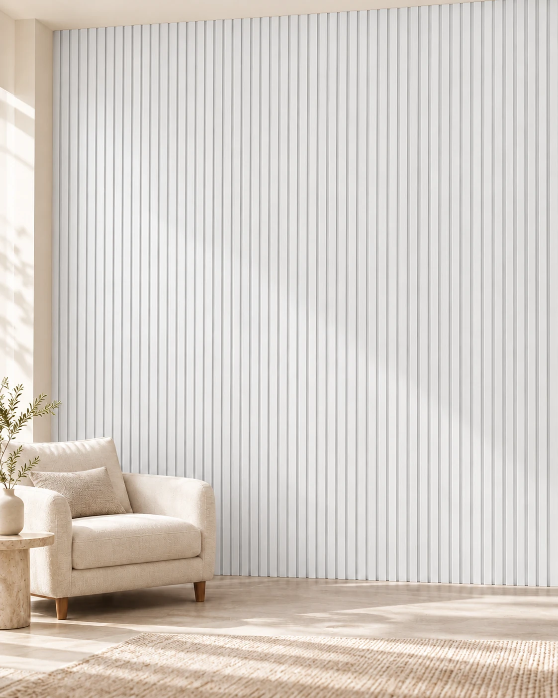

WPC interior
Panel WPC interior Blanco
Panel decorativo de WPC símil madera para revestimientos interiores, compuesto por PVC y fibra de madera. La textura y terminación buscan reproducir la apariencia de la madera con mantenimiento sencillo. El catálogo describe un montaje machimbrado con clips metálicos ocultos sobre estructura nivelada y recomienda limpieza con paño húmedo sin abrasivos.
- Diseño / color
- Blanco
- Material
- WPC: PVC y fibra de madera
- Formato
- 160 × 2900 mm
- Espesor
- Verificar espesor de la partida: web 22 mm / catálogo 24 mm
- Peso informado
- 850 g por metro lineal (web del proveedor)
- Uso
- Interior
- Fijación
- Clips metálicos ocultos; verificar sistema indicado para la partida
- Mantenimiento
- Paño húmedo, sin abrasivos
- Corte
- Sierra de mano o circular con disco fino, según catálogo
Disponibilidad FORMA: Sin stock temporal
Consultar precio
Consultar por WhatsAppConfirmamos precio, disponibilidad y entrega antes de cerrar el pedido.
Antes de elegir
Espesor web 22 mm y PDF local 24 mm: confirmar partida antes de usar un valor comercial único.
OTROS DISEÑOS DE ESTA LÍNEA
MÁS OPCIONES